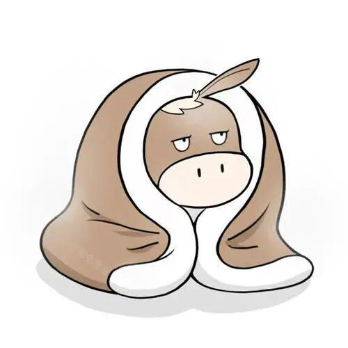
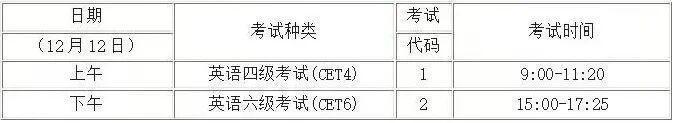
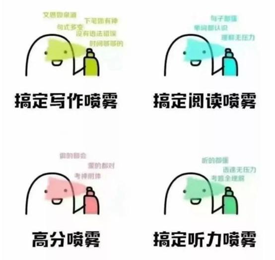

大学生四六级英语特别篇

之前一直传闻说四六级考试要取消了？
不少同学幻想着再也不用努力和四六级斗争了！
在这里，小编要说一句，
同学，你的思想很危险啊！
最近，天气变冷了，你是否有多准备一件棉衣御寒呢？

然而，比冷空气还要让人瑟瑟发抖的还有一样，
那就是，12月份的英语四六级考试，
就在今天了
什么？今天？
单词？还背了不到两页！
题库？还刷了不到一组！
听力？还做了不到一套！
怎么办？！！！
硬着头皮，也要上啊！
2020下半年全国大学英语四六级考试时间：

（1）开头往往会引出话题，容易设置考点，询问文章主题。
（2）注意表示转折和对比的逻辑词：转折、因果、否定部分的内容一般是说话人强调的内容，也是考试的重点。
（3）文章中重复率很高的词汇或者概念往往就是短文的主题。
（4）听力分值很大，一定要认真听。万一没听清，不要纠结于一个选项，适当地放弃，集中精力听下一题。
阅读其实是真的没有什么技巧可言的，
最主要的就是，背单词，背单词，背单词！
所以，尽量把四六级高频词汇，努力背下来
（1）多看多记，考前多背几套作文模板、经典长句子。
（2）句型多变，善用高级单词、名人名言、英语谚语。
（3）条理清晰，善用连接词、转折词，保证文章顺畅完整。
（4）字迹整洁，卷面干净，开头的2--3句话一定要没有明显的语法错误！
（1）在翻译前，先确定可以正确理解文章意思。即便遇到很难的说法，也可以先变成简单的中文再进行翻译。
（2）英文对时态有严格要求，千万别忘记翻译时态的转换。
（3）为了充分地表达原文含义，增减词能使译文更顺畅、易懂。
（4）应用英语的固定句型，这些句式可以加分，是一大亮点。
（5）分析上下句之间的逻辑关系，添加一些简单的连词，调整原文语序，英文的译文会更漂亮。

最后，如果实在不行，
那么，我们就只能用上我们的无敌蒙题公式了！
三长一短选最短
三短一长选最长
两长两短就选B
参差不齐C无敌
排版|李现亮
编辑|李现亮